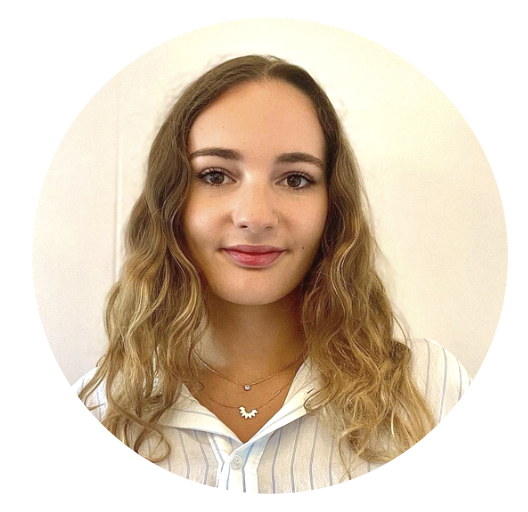
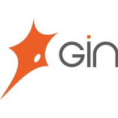
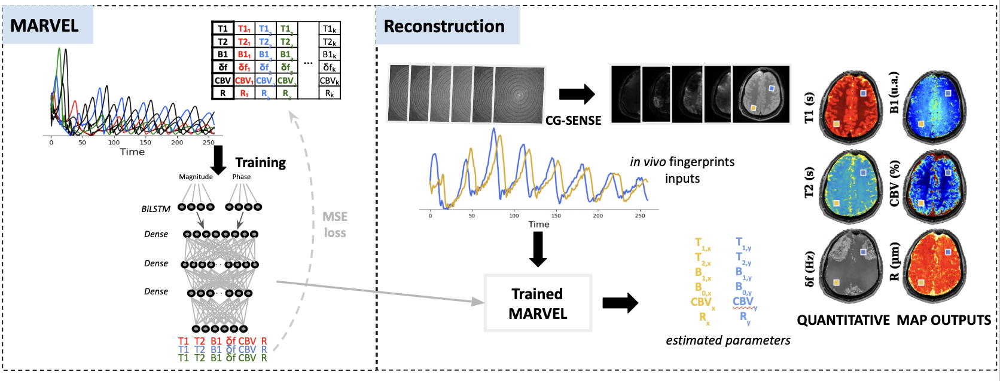
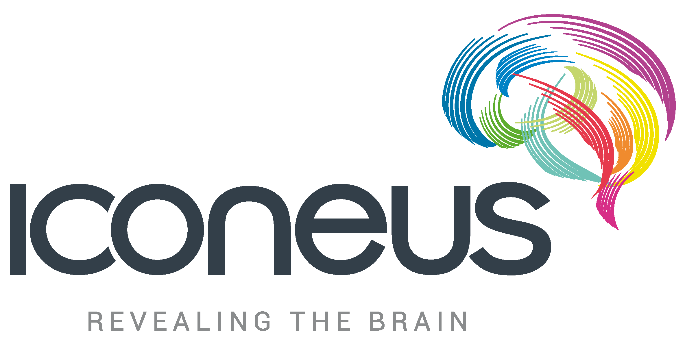

I am a Machine Learning Engineer specialized in artificial intelligence for medical imaging. I am currently working at UCLA as a Research Associate, where I develop and advise on multiple AI research projects.
My professional experiences at UCLA and at the Grenoble Institute of Neurosciences allowed me to develop a strong interest in scientific research and deepen my expertise in Artificial Intelligence.
Working on applied AI projects confirmed my motivation to move beyond the application of existing models and toward understanding, designing, and developing new learning approaches. I therefore aim to pursue a PhD in France starting in 2027 to further strengthen my theoretical foundations and contribute to research in Artificial Intelligence.
UCLA | Los Angeles, USA
GIN INSERM | Grenoble, France
ICONEUS | Paris, France
PHELMA | Grenoble, France
GEM | Grenoble, France
Single Ventricle Physiology (SVP) is a rare congenital heart disease in which patients have only one functional cardiac ventricle. The scarcity of available data and the unusual anatomy compared to healthy hearts make the development of deep learning segmentation methods particularly challenging.
This project aims to develop a robust cardiac MRI segmentation framework designed for SVP patients while remaining generalizable to healthy and other CHD populations. To address data limitations, we first build a data augmentation pipeline capable of generating realistic 3D synthetic SVP anatomies across multiple subtypes, along with corresponding CMR images using generative models.
We modify a segmentation model to incorporate the diagnosis in order to guide the algorithm.
The ultimate goal is to deploy this pipeline on large electronic health record (EHR) cohorts to automatically extract radiomic features and enable large-scale quantitative studies of congenital heart disease outcomes. The project will result in a scientific publication.
Segmentation GAN Data augmentationOur lab has been conducting extensive acquisitions over the past few years to support longitudinal studies. As a result, a large amount of data has accumulated, making it essential to ensure efficient use and maintain correctness.
The aim of the project is to develop a database based on image acquisitions that is useful for both clinicians, who manage the clinical aspects, and engineers and data scientists, who work on image analysis and acquisition.
The first step was to organize all folders in a centralized location following a structured and uniform architecture, which was automated using Bash scripts. We then created different Excel tables to organize information by patient, by acquisition, and by MRI sequence. Patient information is entered manually by clinicians, while information about acquisitions is updated automatically every two weeks using a Python script that reads DICOM headers. Quality control and backup to cold storage are also performed biweekly overnight.
The next phase of the project is to develop a SQL backend to ensure database consistency and provide easy access to filtered datasets.
Data Engineering Python Bash
The Magnetic Resonance Fingerprinting (MRF) approach aims to estimate multiple MR or physiological parameters simultaneously, but achieving realistic parameter estimation requires careful handling of computation time and signal complexity. To address this, the lab developed MARVEL, a bi-LSTM model capable of predicting parameters directly from the MR signal.
My work was two-fold: first, integrating phase information into the model through a parallel bi-LSTM to improve prediction accuracy and robustness; then, evaluating the models on undersampled acquisitions to reduce acquisition time. This involved conducting retrospective studies on fully sampled k-space data, artificially undersampling along specific trajectories using NUFFT, and reconstructing the data with CG-SENSE.
Currently, we are testing both the reconstruction method and MARVEL prospectively on new undersampled acquisitions to validate performance in real conditions. This work was presented at ISMRM 2025 through a Power Pitch and poster, and a manuscript is in preparation.

LSTM Complex-Valued Signals MRI
Independent Component Analysis (ICA) can be used to separate independent signal sources. It has been widely applied in fMRI to isolate brain signals and identify functional brain regions along with their associated temporal activity. The objective of my internship was to evaluate whether this approach could also be applied to functional ultrasound (fUS) data.
First, I implemented the FastICA algorithm and optimized its parameters. I then applied the method to several tasks. On the one hand, ICA was used for denoising by identifying and removing components corresponding to Gaussian noise. On the other hand, it was used to analyze functional connectivity, both at the individual subject level and between two groups of mice receiving different pharmacological treatments, by studying changes in connectivity patterns.
The results demonstrate that ICA is well suited for fUS data, both for denoising and for functional connectivity analysis.
ICA Signal Processing Statistics